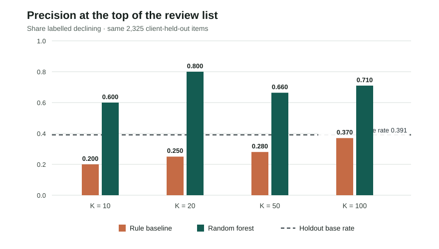
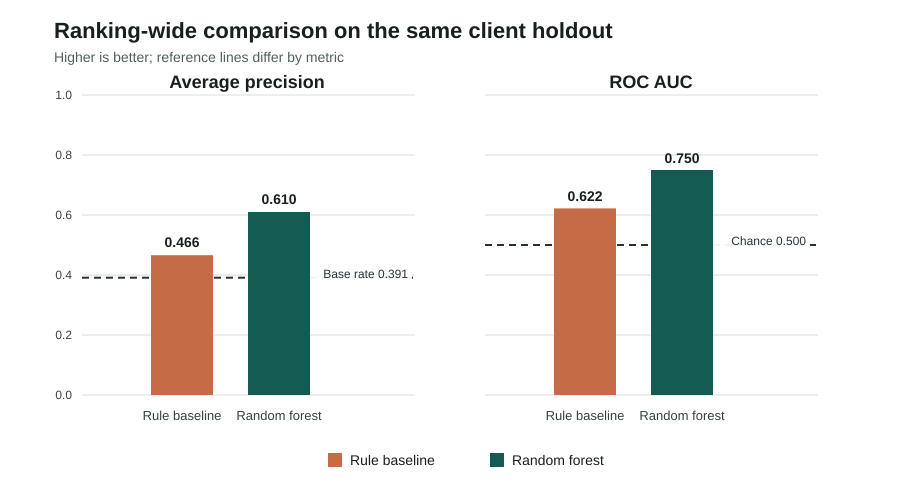

Research paper · decision-support ranking
Which Pages Should an Editor Review First?
A client-held-out content review ranking on an anonymized starter snapshot
Abstract
Question. Which existing content items should a human review first when editorial time is limited? Data. We use the bundled 30,000-row, 44-column anonymized starter snapshot covering 32 pseudonymized clients and define a proxy decline label from recent-versus-prior impressions. Method. A random-forest ranker is compared with a transparent rule score on the same fixed-seed client-grouped holdout, excluding identifiers and label-defining fields from model features. Result. On 2,325 held-out items from six clients, model Precision@50 is 0.660 versus 0.280 for the rule and a 0.391 target prevalence. Use. The output is a human-review ordering for this snapshot, not a forecast of future performance or evidence that refreshing content causes recovery.
1. Introduction / Problem Statement
An editor has more pages to inspect than time to inspect them. This study asks whether a compact ranking can order a review list more usefully than a transparent freshness-and-visibility rule, measured as the share of proxy-labelled declines among the first 50 items. The intended decision is what to inspect first, not what to rewrite or publish.
A false positive can spend editorial time on an item that does not match the proxy label; a false negative can delay a useful inspection. Neither cost nor the impact of an editorial action is measured here. The model is a triage aid for a supervised pilot, not an automated content workflow.
2. Data
The analysis uses data/raw/content_refresh_anonymized.csv, the bundled FlyRank internship starter export: 30,000 content-item rows, 44 source columns, and 32 pseudonymized clients. One row represents one content item. This is a single snapshot, not a daily warehouse table. Its activity features aggregate a trailing 90-day window ending at export time; the export contains no calendar extraction date, so no calendar date range is claimed.
The proxy label compares impressions in the most recent 30 days with impressions in the previous 30 days. trend_direction == "down" means the recent window is more than 20% lower. The export contains no page titles, URLs, domains, client names, or raw search queries. It has 30,000 unique content IDs, no duplicate IDs, no zero-impression rows, and no items younger than 90 days; this capstone applies no further row filtering.
Release boundary. These results do not use the separate 78,835,655-row warehouse release described elsewhere in the repository. No warehouse tables or partitions were queried. All claims here are limited to the starter CSV and this notebook run.
Identifiers are used only for deduplication and client-group splitting. The feature frame excludes content_id, client_id, is_declining_label, trend_direction, trend_pct, the explicit recent/previous 30-day comparison fields, and the baseline score. Provider/model metadata is not part of this feature set. The last/previous-window fields define or overlap the target; IDs could encode identity or client membership; and the baseline is a comparator, not a predictor. Although the explicit comparison fields are excluded, trailing-90-day activity features still overlap the recent-30-day label window.
3. Methodology
Target and assumptions
The target is the observed snapshot proxy is_declining_label = (trend_direction == "down"). It is not a future-month event. The analysis assumes that this proxy is useful for illustrating a review-ordering workflow on this snapshot; it does not assume a labelled decline is recoverable or that a refresh will change the outcome.
Features and model
The random forest uses 18 numeric and eight categorical fields. Numeric inputs: search volume, competition, cost per click, word and character counts, 90-day impressions/clicks/sessions/AI sessions, active-day counts, content age, update age, CTR, average position, engagement rate, scroll rate, and AI traffic percentage. Categorical inputs: competition level, content type, intent, age/freshness tiers, word-count tier, impression tier, and position tier.
Numeric missing values are imputed with training-set medians and missingness indicators; categorical missing values use the most frequent training value, followed by one-hot encoding. The classifier is a random forest with 100 trees, maximum depth 10, minimum leaf size 25, balanced subsampling, and seed 42. Scores order the queue; calibration was not evaluated.
Baseline
The transparent rule combines four percentile-ranked signals, calculated over the full snapshot: visibility (40%), update age (30%), position opportunity (25%), and content-depth gap (5%). It is scored on exactly the same held-out rows as the random forest. This ranks a known batch; it is not presented as an optimized or independently calibrated production baseline.
Validation and leakage checks
A fixed-seed 20% client holdout was used: six complete clients (2,325 items) were held out, with 27,675 items for training. No client or content ID overlapped across the client-grouped boundary. The rule baseline, model, and base rate all use the same test rows. A stratified row-split fallback exists in the notebook only if a group split cannot contain both classes; it was not used in this run.
The notebook asserts that IDs, the label and its source fields, explicit 30-day comparison fields, and the baseline score are not model features. These checks prevent direct label-column leakage and client overlap. They do not fix temporal overlap between trailing-90-day activity features and the recent-30-day proxy label.
Evaluation measures
Precision@K is the share labelled declining within the top K ranked items. Precision@50 is the primary measure because the motivating review budget is 50. Average precision summarizes ranking quality over the full holdout; ROC AUC measures pairwise discrimination. The held-out prevalence is included as the random-selection reference.
4. Results
On the same 2,325 held-out items, model Precision@50 is 0.660, compared with 0.280 for the rule baseline and 0.391 for random selection at the holdout base rate. That is 33 labelled items in the model's first 50 versus 14 in the rule's first 50, on this one split. Average precision is 0.610 versus 0.466; ROC AUC is 0.750 versus 0.622.
| Method | Precision@10 | Precision@20 | Precision@50 | Precision@100 | Average precision | ROC AUC |
|---|---|---|---|---|---|---|
| Expected under random selection | 0.391 | 0.391 | 0.391 | 0.391 | Not applicable | Not applicable |
| Transparent rule baseline | 0.200 | 0.250 | 0.280 | 0.370 | 0.466 | 0.622 |
| Random forest | 0.600 | 0.800 | 0.660 | 0.710 | 0.610 | 0.750 |


The model exceeds the rule and random-selection reference on the selected measures in this run. This is an observed difference on one client holdout, not an estimate of expected performance across future clients or months.
5. Limitations & Honest Framing
- The study uses the 30,000-row starter snapshot, not the 78.8-million-row warehouse release. It has no calendar extraction date.
- The target is a current snapshot proxy derived from recent-versus-prior impressions, not a future outcome.
- Trailing-90-day features overlap the recent-30-day label window. Excluding
trend_direction,trend_pct, and explicit comparison fields prevents direct target-field leakage but does not provide temporal separation. - The grouped holdout contains six clients and is one fixed split. There are no repeated-fold uncertainty estimates or time-forward test; client composition can materially affect the result.
- The baseline uses full-snapshot percentile ranks, appropriate for ranking a known batch but not evidence of a frozen, independently calibrated production baseline.
- Model scores are not calibrated. Editorial labor, business value, refresh effects, and causal outcomes are unmeasured.
- The export covers only the content and instrumentation present in this starter slice. Missing or absent signals do not imply low quality or no opportunity.
The defensible claim is narrow: on this fixed client-held-out split of the starter snapshot, the random forest ranked the proxy label above the rule baseline at K=50 and on the reported ranking metrics. It does not show that the model will generalize to new time periods, that an item will continue to decline, or that an editorial change will improve performance.
6. Ranked Recommendations
- Pilot the ordering with a human reviewer and fixed small batch. The observed top-50 comparison supports testing the random-forest order against the rule; it does not warrant automated edits. Record accepts, rejects, overrides, and time spent.
- Verify stale, visible candidates before allocating substantive work. The playbook flags items with at least 500 trailing-90-day impressions and 180 or more days since update. Check current status, intent, and recent edits first.
- Inspect search-intent and snippet context for low-CTR candidates. The review rule requires at least 500 impressions, a recorded average position from 1 through 20, and CTR below 0.5 percentage points. It prompts inspection, not an automatic rewrite.
- Use measured engagement as a secondary page-experience check. With at least 30 sessions, a positive engagement or scroll rate below 30% is a review cue. Zero or missing measurement is not evidence of poor experience.
- Monitor or improve measurement when no strong signal is present. “Monitor or measure” is not a healthy-page label. Compare human outcomes with the rule baseline before expanding the pilot.
The held-out queue's aggregate action counts are: monitor_or_measure 1,650; review_snippet_and_search_intent 227; audit_snippet_and_position 212; refresh_fact_check_and_prioritize 187; review_page_experience 47; and review_content_experience 2. Thresholds and action names are workflow hypotheses, not calibrated risk bands or measured ROI. Every item remains subject to human review.
7. Reproducibility
From the repository root, install the declared packages, open the capstone notebook, and run all cells from a fresh kernel:
python -m pip install -r requirements.txt
# Open work/notebooks/capstone.ipynb in VS Code or Jupyter and Run AllThe notebook fixes seed 42 and records Python 3.13.15, pandas 3.0.0, NumPy 2.4.2, and scikit-learn 1.8.0 for this run. It writes aggregate metrics and canonical figures under work/, then copies the SVGs into this Pages-published folder; it does not export a row-level queue. Reproduction uses the bundled anonymized starter CSV and does not require gated warehouse access.
8. Acknowledgments & Data Credit
Built on the FlyRank ML Internship dataset. The separate warehouse release is not the data source for the results in this paper.
Reporting and Design References
- Collins GS, Moons KGM, Dhiman P, et al. TRIPOD+AI statement: updated guidance for reporting clinical prediction models that use regression or machine learning methods. BMJ. 2024;385:e078378. doi:10.1136/bmj-2023-078378. Used as a reporting checklist for accurate abstracts, evaluation details, limitations, and open materials; it is not a domain-specific quality standard for this non-clinical study.
- NeurIPS. Paper Checklist Guidelines. Informed the claim-scope, limitations, and reproducibility checks.
- Google. Rules of Machine Learning. Supports starting with a measurable baseline and evaluating the metric that matches the review decision.
- W3C Web Accessibility Initiative. Reflow (WCAG 2.2, SC 1.4.10), Complex Images, and Page Structure Tutorial. Informed the responsive single-column layout, semantic structure, and chart descriptions with adjacent text/table equivalents.